Rólam
(11. szöveg)
(12. szöveg)
(13. szöveg)
Professzionális kozmetikai kezelések, kézápolás és műköröm építés, ahol minden vendég személyre szabott figyelmet kap.
Szolgáltatásaim megtekintése
(11. szöveg)
(12. szöveg)
(13. szöveg)
✦ Szemöldök formázás
✦ Szemöldök festés
✦ Szempilla festés
✦ Szempillalifting
✦ Bajusz
✦ Áll
✦ Arc
✦ Lábszár
✦ Comb
✦ Teljes láb
✦ Kar könyékig
✦ Teljes kar
✦ Bikini vonal
✦ Intim
✦ Hónalj
✦ Mellkas
✦ Hát
✦ Nappali Smink
✦ Alkalmi Smink
✦ Esküvői Smink
(Tartalmazza a próbasminket)
✦ Studex System 75
✦ Fül
✦ Orr
✦ Köldök
✦ 3% Hidrogén-peroxid oldat
✦ Új szett
✦ Töltés
✦ Leoldás
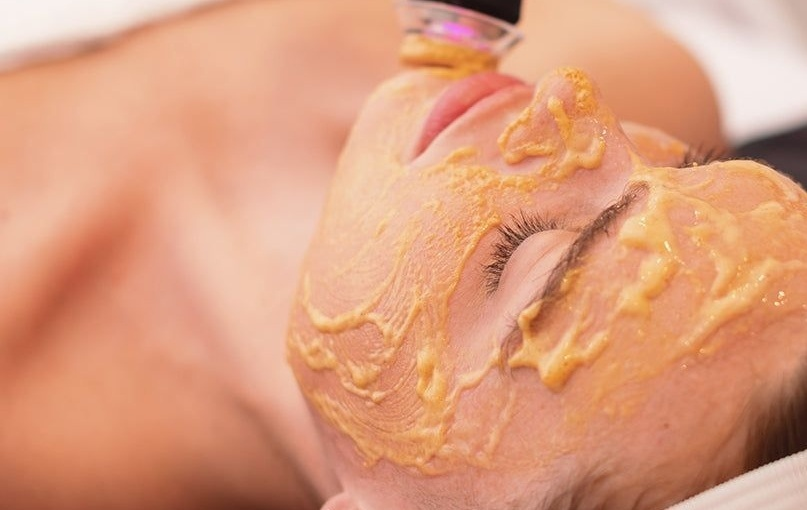
Oxigénterápiás bőrmegújítás és mélytisztítás
Szeretnéd, ha a bőröd újra üde, telt és élettel teli lenne? Az Oxy Bubble Pod kezelés egy innovatív, fájdalommentes arcesztétikai eljárás, amely a természetes oxigénellátást ötvözi a gyengéd hámlasztással és a hatóanyag-bevitellel.
A kezelés a népszerű Bohr-hatáson alapul: a bőr felszínén képződő micro-buborékok hatására a szervezet oxigént juttat a kezelt területre belülről kifelé, így serkentve a sejtek megújulását és a vérkeringést.
Milyen előnyökre számíthatsz?
Ragyogó, üde arcbőr: Azonnal láthatóan csökkenti a fáradtság jeleit.
Mélyreható hidratálás: A szérumok hatékonyabban szívódnak fel a sejtek szintjén.
Gyengéd bőrmegújítás: Eltávolítja az elhalt hámsejteket dörzsölés és irritáció nélkül.
Bőrfeszesítő hatás: Támogatja a kollagéntermelést és javítja a bőr rugalmasságát.
Nulla felépülési idő: A kezelés után azonnal visszatérhetsz a napi teendőidhez.
Kinek ajánljuk?
Minden bőrtípusra kiváló választás, különösen akkor, ha:
Fáradt, fakó vagy dohányzás miatt elszíneződött a bőröd.
Egy fontos esemény előtt azonnali, "red carpet" ragyogásra vágysz.
Szeretnéd megelőzni az első finom ráncok kialakulását.
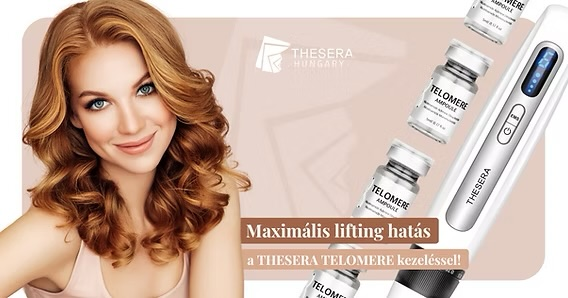
Sejtszintű fiatalítás és bőrmegújítás
Szeretnéd visszafordítani az idő kerekét és megelőzni a bőr korai öregedését? A THESERA Telomer kezelés a prémium koreai professzionális bőrápolás csúcskategóriás anti-aging eljárása. A sejtek élettartamát szabályozó telomer-kutatásokon alapuló technológia nemcsak a felületi tüneteket kezeli, hanem a bőr mélyebb rétegeiben indítja be az aktív regenerációt.
A kezelés célja a sejtek öregedési folyamatának lassítása, a sérült DNS-szerkezet védelme és az arc kontúrjainak látványos feszesítése.
Milyen előnyökre számíthatsz?
Sejtszintű anti-aging: Támogatja a sejtek megújulási képességét és hosszabb élettartamát.
Látványos lifting hatás: Feszesíti az megereszkedett kontúrokat és javítja a bőr rugalmasságát.
Ráncfeltöltés és simítás: Csökkenti a finom vonalak és a mélyebb ráncok láthatóságát.
Intenzív sejtszintű hidratálás: Helyreállítja a bőr természetes védőrétegét (barrier) és nedvességtartalmát.
Egyenletes bőrtónus: Csökkenti a pigmentációt és egészséges, üde ragyogást kölcsönöz az arcnak.
Kinek ajánljuk?
A THESERA Telomer kezelés ideális választás, ha:
Elmúltál 30-35 éves, és szeretnéd megelőzni vagy kezelni a bőröregedés első jeleit.
Úgy érzed, a bőröd veszített a rugalmasságából, tömörségéből és feszességéből.
Hatékony, tűmentes és fájdalommentes alternatívát keresel az intenzív megfiatalodásra.
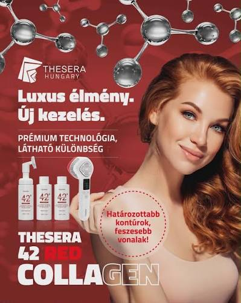
Prémium kollagén-mátrixos arcfiatalítás
Szeretnéd visszaadni a bőrödnek a fiatalság tömörségét és rugalmasságát? A THESERA RED 42 egy olyan innovatív, tűmentes anti-aging kezelés, amely a legújabb koreai bőrápolási technológiával juttatja a kollagént és az aktív tápanyagokat közvetlenül a bőr mélyebb rétegeibe.
A kezelés kulcsa a 42-es kollagén komplex és a nanotechnológiás szállítási rendszer, amely segít feltölteni a sejtközötti állományt, kisimítani a ráncokat és intenzíven tömöríteni a bőr szerkezetét.
Milyen előnyökre számíthatsz?
Intenzív ráncfeltöltés: Csökkenti a finom vonalakat és a mélyebb mimikai ráncokat.
Bőrtömörség javítása: Helyreállítja a megereszkedett bőr rugalmasságát és feszességét.
Mélyrétegű hidratálás: A kollagén-mátrix megköti a nedvességet a sejtekben, megelőzve a kiszáradást.
Azonnali "plumping" (feltöltő) hatás: A bőr már az első alkalom után érezhetően dúsabb és kisimultabb lesz.
Fájdalommentes és biztonságos: Tűk és gyógyulási idő nélkül érsz el látványos eredményt.
Kinek ajánljuk?
A THESERA RED 42 kezelés tökéletes választás, ha:
Bőröd veszített a rugalmasságából, tömörségéből és feszességéből.
Látványos megoldást keresel a mimikai ráncok és a kontúrok megereszkedése ellen.
Tűmentes, pihentető, mégis orvos-esztétikai hatékonyságú anti-aging kezelésre vágysz.
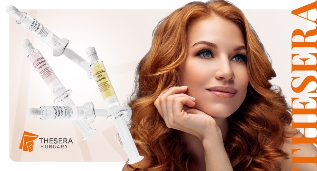
Kezelések – Sejtszintű bőrmegújítás és sejtközi kommunikáció
Készen állsz a modern bőrápolás legújabb áttörésére? A THESERA Signature Exoszóma kezelések a sejtközi információátadás úttörő technológiájára épülnek. Az exoszómák apró, természetes sejthordozók, amelyek képesek közvetlenül a bőrsejtekhez eljutni, és "utasítást" adni nekik a regenerációra, a kollagéntermelésre és az öngyógyításra.
A szabadalmaztatott Twin-Exosome™ kapszulázási technológiával készült ampullák orvosi tisztaságú skin booster hatóanyagokat juttatnak el a bőr mélyebb rétegeibe, garantálva a hosszan tartó és látványos eredményt.
Milyen előnyökre számíthatsz?
Intenzív sejtszintű regeneráció: Újraindítja a sejtek természetes megújulási folyamatait.
Személyre szabott megoldások: A bőröd aktuális állapotához igazítható hatóanyag-koktélok (hidratálás, öregedésgátlás, pigmentfolt-halványítás vagy gyulladáscsökkentés).
Bőrtónus és textúra javítása: Összehúzza a pórusokat, kisimítja az apróbb ráncokat és egyenletessé teszi a bőrfelszínt.
Maximális felszívódás: A nanotechnológiás kapszulázásnak köszönhetően a hatóanyagok pontosan ott fejtik ki hatásukat, ahol a leginkább szükség van rájuk.
Kíméletes és fájdalommentes: Tű nélküli, mégis orvos-esztétikai hatékonyságú eljárás.
Milyen célzott ampullákkal dolgozunk?
EXO PDRN (Regeneráló & Anti-aging): Lazac- és növényi exoszómákkal a mély ráncok, megereszkedett bőr és a tág pórusok ellen.
HYALURONIC (Intenzív Hidratáló): 10-féle hialuronsavval és botox-hatású peptidekkel a vízhiányos, feltöltésre vágyó bőrért.
RED VITAMIN (Ragyogásfokozó): 12-féle vitamin szinergiájával a fakó, pigmentfoltos bőr revitalizálására.
BHA (Bőrnyugtató & Tisztító): Gyulladáscsökkentő és faggyútermelést szabályozó hatás a problémás, akne-ra hajlamos bőrre.
Kinek ajánljuk?
Minden bőrtípusra ideális választás, különösen ha:
Szeretnéd megelőzni vagy korrigálni a bőröregedés jeleit.
Vízhiányos, fáradt vagy egyenetlen felszínű a bőröd.
Érzékeny, gyulladásra vagy pigmentációra hajlamos arcképpel küzdesz
Tipp: Az exoszómás kezelés önmagában is látványos frissülést nyújt, de 3–4 alkalmas kúrában alkalmazva tartós sejtszintű megújulást eredményez.
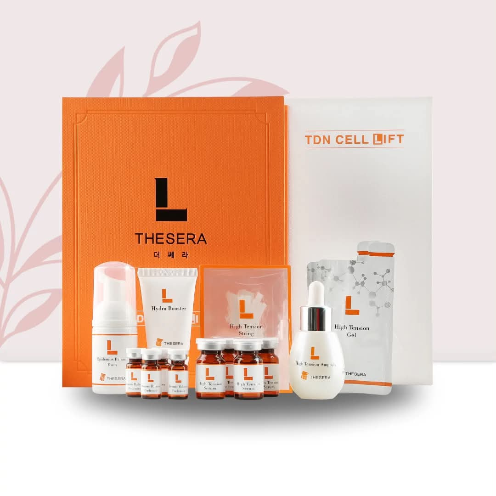
Tűmentes kollagénszálas arcfeszesítés és kontúrozás.
Szeretnél látványosan feszesebb, emeltebb arcvonásokat szike és tűk nélkül? A THESERA L. Lifting a népszerű koreai bőrápolás egyik leginnovatívabb, szabadalmaztatott anti-aging eljárása. A kezelés során speciális, olvadó kollagénszálakat juttatunk a bőr mélyebb rétegeibe, amelyek szövetszerkezeti alátámasztást nyújtanak és belülről töltik fel a ráncokat.
Ez a fájdalommentes "biztonságos lifting" hosszan tartó rugalmasságot ad a bőrnek, javítja a sejtszintű kollagéntermelést, miközben teljesen természetes hatást biztosít.
Milyen előnyökre számíthatsz?
Azonnali lifting hatás: Kifejezetten a megereszkedett arcél, toka és orr-ajak barázda emelésére fejlesztve.
Tűmentes szálbehúzás: A kollagénszálak nanotechnológiás úton, fájdalommentesen szívódnak fel a bőrben.
Ráncfeltöltés és tömörítés: Kisimítja a finom vonalakat, és felölti a mélyebb mimikai ráncokat.
Kollagénstimuláció: Nemcsak pótolja, de serkenti is a szervezet saját kollagén- és elasztintermelését.
Zéró felépülési idő: A kezelés után nincs duzzanat vagy véraláfutás, az eredmény azonnal látható.
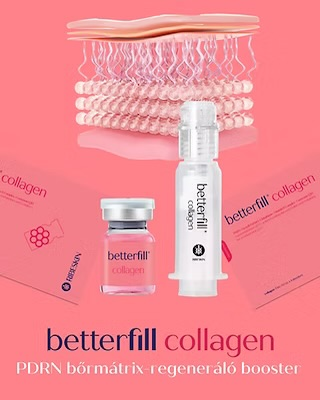
Mélyrétegű kollagénfeltöltés és bőrszerkezet-javítás
Szeretnéd visszaadni a bőröd rugalmasságát és megelőzni a korai öregedést? A Ribeskin Betterfill Collagen egy intenzív, tűmentes anti-aging eljárás, amely a bőr saját kollagénkészletének pótlására és a szövetek tömörítésére fókuszál.
A kezelés célja a fáradt, megereszkedett vagy vízhiányos bőr mélyreható szerkezetépítése, azonnali kisimult és telt bőrképet eredményezve.
Milyen előnyökre számíthatsz?
Látványos ránctalanítás: Csökkenti a finom vonalakat és finomítja a mélyebb mimikai ráncokat.
Intenzív kollagénpótlás: Növeli a bőr tömörségét, feszességét és rugalmasságát.
Mélyreható hidratálás: Megköti a nedvességet a sejtközötti állományban.
Üde és élettel teli bőr: Visszaadja az arc természetes, egészséges ragyogását.
Fájdalommentes megoldás: Gyógyulási idő és tűk nélkül biztosít azonnali szépülést.
Kinek ajánljuk?
A Ribeskin Betterfill Collagen tökéletes választás, ha:
Úgy érzed, a bőröd veszített a feszességéből és tömörségéből.
Fáradt, dehidratált vagy megviselt a bőrképed.
Kíméletes, mégis hatékony anti-aging megoldást keresel a ráncok megelőzésére és kezelésére.
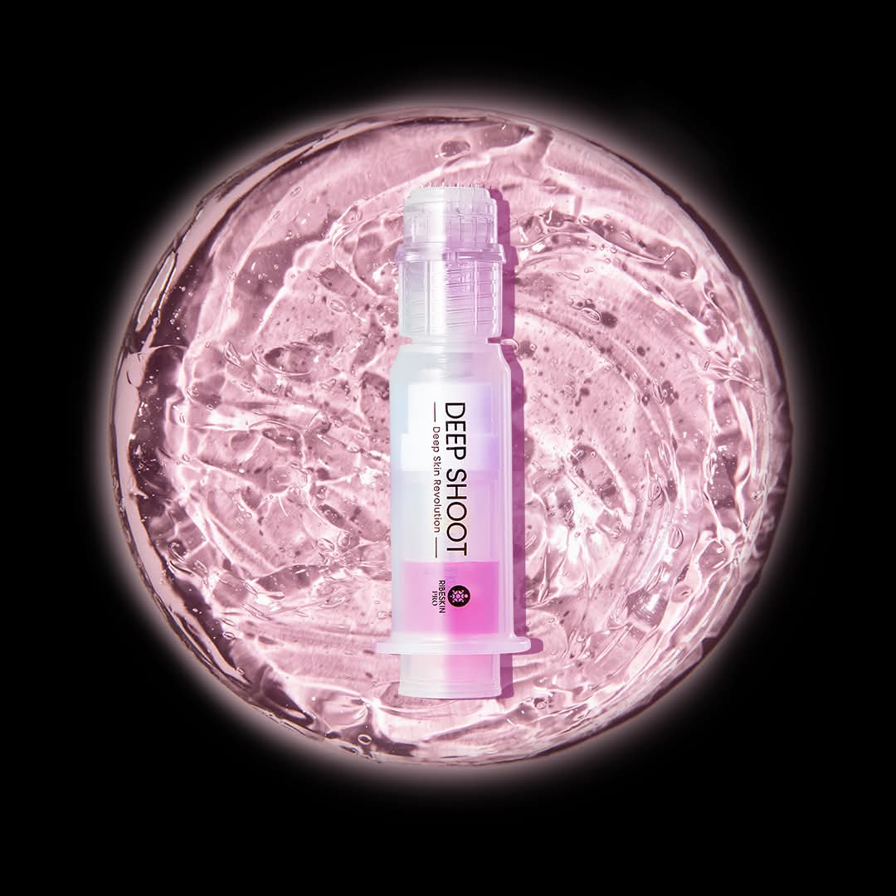
Intenzív anti-aging és mélyrétegű bőrmegújítás
Szeretnéd visszakapni az arcbőröd fiatalságát és feszességét? A Ribeskin Deep Shoot AA egy professzionális, orvos-esztétikai ihletésű anti-aging kezelés, amelyet kifejezetten az öregedés jeleinek megelőzésére és célzott korrekciójára fejlesztettek ki.
A kezelés lényege a speciális Turtlepin (mikrotűs hatóanyag-beviteli) technológia és az ultra-koncentrált anti-aging szérum szinergiája, amely közvetlenül a bőr mélyebb rétegeibe juttatja az aktív fiatalító összetevőket (hialuronsavat, peptideket és növekedési faktorokat).
Milyen előnyökre számíthatsz?
Látványos ránctalanítás: Finomítja a mimikai ráncokat és csökkenti a mélyebb redők mélységét.
Intenzív bőrfeszesítés: Serkenti a saját kollagén- és elasztintermelést, visszaadva a bőr tömörségét.
Mélyrétegű hidratálás: Feltölti a sejtközötti állományt és hosszan tartó nedvességet biztosít.
Maximális hatóanyag-felszívódás: A speciális beviteli eljárásnak köszönhetően a hatóanyagok veszteség nélkül jutnak a célsejtekhez.
Minimális felépülési idő: Gyors, kíméletes és rendkívül hatékony eljárás a látványos megfiatalodásért.
Kinek ajánljuk?
A Ribeskin Deep Shoot AA kezelés tökéletes választás, ha:
Elmúltál 30 éves, és szeretnéd megelőzni vagy láthatóan csökkenteni a bőröregedés jeleit.
Vízhiányos, tömörségét vesztett vagy megereszkedett a bőröd.
Gyors, mégis mélyreható és tartós anti-aging megoldást keresel az arc, a nyak vagy a dekoltázs területére.
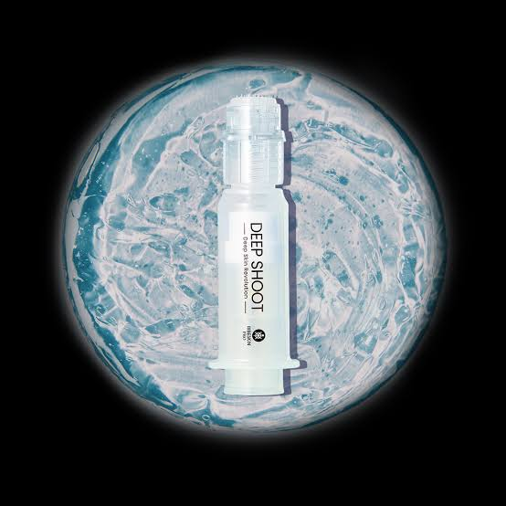
Mélyrétegű hialuronsavas feltöltés és intenzív hidratálás
Szeretnéd visszaadni a bőröd természetes rugalmasságát, tömörségét és élettel teli ragyogását? A Ribeskin Deep Shoot HA egy professzionális, orvos-esztétikai ihletésű mélyhidratáló kezelés, amely célzottan a vízhiány, a szárazság és a dehidratáltság okozta finom ráncok ellen küzd.
A kezelés lényege a speciális Turtlepin (mikrotűs hatóanyag-beviteli) technológia és az ultra-koncentrált hialuronsavas szérum szinergiája, amely közvetlenül a bőr mélyebb rétegeibe juttatja a nagy- és kismolekulájú hialuronsavat, garantálva az azonnali és hosszan tartó hidratáltságot.
Milyen előnyökre számíthatsz?
Azonnali feltöltő ("Plumping") hatás: Látványosan kisimítja a vízhiányos, finom ráncokat.
Mélyrétegű, hosszan tartó hidratálás: Helyreállítja a bőr nedvességtartalmát és megelőzi a kiszáradást.
Feszesebb és rugalmasabb bőr: Támogatja a bőr saját vízmegkötő képességét és tömörségét.
Maximális hatóanyag-hasznosulás: A speciális beviteli eljárásnak köszönhetően a hialuronsav pontosan a megfelelő rétegbe jut.
Üde, ragyogó bőrképlet: Megszünteti a fakó, húzódó, fáradt bőr érzetét.
Kinek ajánljuk?
A Ribeskin Deep Shoot HA kezelés tökéletes választás, ha:
Bőröd intenzíven vízhiányos, száraz vagy láthatóan hiányzik belőle a rugalmasság.
Szeretnéd megelőzni vagy korrigálni a dehidratáltságból eredő apró ráncokat.
Gyors, kíméletes és fájdalommentes mélyhidratáló megoldást keresel az arc, a nyak vagy a dekoltázs területére.
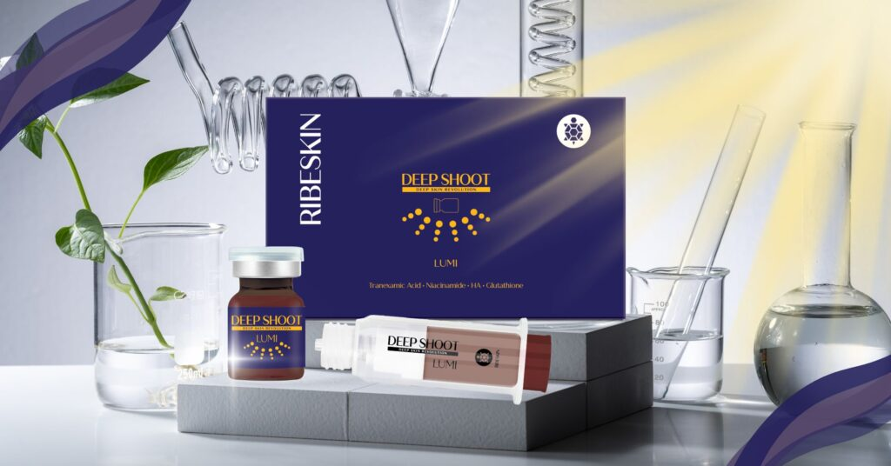
Bőrvilágosító és ragyogásfokozó mélyrétegű kezelés
Szeretnéd visszakapni az arcbőröd egységes, üde és ragyogó tónusát? A Ribeskin Deep Shoot LUMI egy professzionális, orvos-esztétikai ihletésű bőrvilágosító és pigmentfolt-halványító kezelés, amelyet kifejezetten a fakó, foltos és egyenetlen bőrszín korrigálására fejlesztettek ki.
A kezelés lényege a speciális Turtlepin (mikrotűs hatóanyag-beviteli) technológia és az ultra-koncentrált világosító szérum szinergiája, amely közvetlenül a bőr mélyebb rétegeibe juttatja az aktív ragyogásfokozó összetevőket (glutationt, C-vitamint és niacinamidot).
Milyen előnyökre számíthatsz?
Pigmentfolt-halványítás: Láthatóan csökkenti a napfoltok, májfoltok és a pattanások utáni elszíneződések intenzitását.
Egyenletes bőrtónus: Megszünteti a sárgás, fakó vagy egyenetlen arcszínt.
Azonnali ragyogás ("Glow" hatás): Élettel teli, friss és egészséges fényt ad a bőrnek.
Maximális hatóanyag-hasznosulás: A célzott beviteli eljárással a hatóanyagok pontosan ott fejtik ki hatásukat, ahol a pigmentáció képződik.
Gátolja a melanin-termelést: Segít megelőzni az újabb pigmentfoltok kialakulását.
Kinek ajánljuk?
A Ribeskin Deep Shoot LUMI kezelés tökéletes választás, ha:
Pigmentfoltokkal, hiperpigmentációval vagy napkárosodott bőrrel küzdesz.
Arcboröd fáradt, fakó, szürke vagy élettelen hatást kelt.
Fontos esemény előtt állsz, és azonnal egységes, ragyogó bőrképre vágysz.
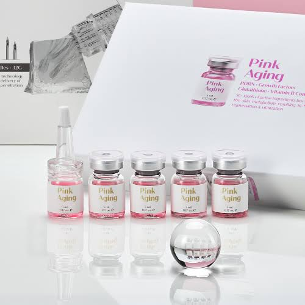
Intenzív sejtregeneration és bőrrevitalizáció
Szeretnéd visszakapni az arcbőröd fiatalos, üde és rózsás ragyogását? A Ribeskin Pink Aging egy professzionális, orvos-esztétikai ihletésű bőrmegújító eljárás, amely 56 aktív hatóanyag erejével indítja be a bőr sejtszintű megújulását.
A kezelés lényege a speciális Turtlepin (mikrotűs hatóanyag-beviteli) technológia és az egyedülálló, rózsaszín revitalizáló szérum szinergiája, amely közvetlenül a bőr mélyebb rétegeibe juttatja az esszenciális aminosavakat, vitaminokat, peptidet és hialuronsavat.
Milyen előnyökre számíthatsz?
Sejtszintű bőrfiatalítás: Aktiválja a bőrsejt-metabolizmust és fokozza a kollagéntermelést.
Intenzív tónusjavítás: Visszaadja a bőr természetes, egészséges és rózsás ragyogását.
Ránctalanítás és feszesítés: Kisimítja a finom vonalakat és javítja a bőr rugalmasságát.
Mélyreható hidratálás: Helyreállítja a nedvességháztartást a vízhiányos szövetekben.
Maximális hatóanyag-hasznosulás: A célzott beviteli eljárásnak köszönhetően az 56 aktív összetevő közvetlenül a célsejtekhez jut.
Kinek ajánljuk?
A Ribeskin Pink Aging kezelés tökéletes választás, ha:
Arcboröd fáradt, fakó, szürke vagy elszíneződött.
Szeretnéd megelőzni vagy korrigálni a bőröregedés első jeleit.
Egy komplett, sejtterápiás hatású revitalizáló megoldást keresel a bőröd teljes megújítására.
Éleszd újjá a bőröd 56 aktív hatóanyag erejével!
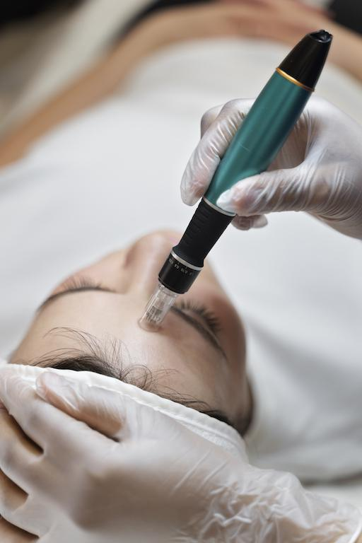
Kollagénindukciós terápia és mélyrétegű bőrmegújítás
Szeretnéd láthatóan feszesebbé, simábbá és egyenletesebbé tenni az arcbőröd? A Dermapen egy orvos-esztétiai hatékonyságú, mikroperforációs eljárás, amely a bőr saját öngyógyító folyamatait aktiválja a látványos megfiatalodásért.
A kezelés során a nagy sebességű, ultra-vékony tűk mikroszkopikus csatornákat nyitnak a bőrben. Ez egyrészt beindítja az intenzív kollagén- és elasztintermelést, másrészt utat nyit a koncentrált hatóanyagok mélyebb rétegekbe való eljutásának.
!Milyen előnyökre számíthatsz?
Látványos bőrfeszesítés: Serkenti a saját kollagénszintézist, így tömöríti és emeli a megereszkedett szöveteket.
Ráncok és finom vonalak csökkentése: Kisimítja a mimikai ráncokat, és javítja a bőr rugalmasságát.
Sebhelyek és aknényomok halványítása: Hatékonyan finomítja a pattanások után visszamaradt hegeket és texturális egyenetlenségeket.
Pórusösszehúzó hatás: Láthatóan csökkenti a tág pórusok méretét és egyenletesebb bőrfelszínt eredményez.
Maximális hatóanyag-hasznosulás: A mikronyílásokon keresztül a mélyre juttatott szérumok hatása többszörösére növekszik.
Kinek ajánljuk?
A Dermapen kezelés tökéletes választás, ha:
Megereszkedett a bőröd, vagy vesztett a tömörségéből és feszességéből.
Aknés hegekkel, tág pórusokkal vagy egyenetlen bőrfelszínnel küzdesz.
Pigmentfoltokat, napkárosodást vagy az öregedés korai jeleit szeretnéd hatékonyan korrigálni.
Tripla technológiás mélyrétegű bőrmegújítás és feszesítés
Szeretnéd, ha a bőröd mélyről töltekezne fel és visszakapná természetes kontúrjait? A Lilena SONOSKIN egy csúcskategóriás, kombinált arcesztétikai kezelés, amely három hatékony technológia – az ultrahang, a rádiófrekvencia és a mágneses stimuláció – erejét egyesíti egyetlen kényelmes eljárásban.
A szinergikus technológiának köszönhetően a kezelés nemcsak a tápláló hatóanyagokat juttatja a bőr legmélyebb rétegeibe, hanem a mélyszövetek felmelegítésével és sejtszintű stimulációjával látványos lifting és feszesítő hatást ér el.
Milyen előnyökre számíthatsz?
Háromszoros hatékonyságú bőrmegújítás: Az ultrahang, a rádiófrekvencia és a mágneses mező együttesen serkenti a sejtek regenerációját.
Mélyrétegű hatóanyag-csapda: Az ultrahangos szonoforézis segítségével a szérumok a bőr legmélyebb rétegeibe jutnak, ahol tartósan kifejtik hatásukat.
Azonnali és tartós feszesítés: A rádiófrekvenciás hőhatás összehúzza a kollagénrostokat és beindítja az új kollagén termelődését.
Fokozott sejtkeringés és méregtelenítés: A mágneses impulzusok javítják a micro-cirkulációt és a szövetek oxigénellátását.
Fájdalommentes és pihentető: Tűk és gyógyulási idő nélkül nyújt prémium, szalonminőségű arcfiatalítást.
Kinek ajánljuk?
A Lilena SONOSKIN kezelés tökéletes választás, ha:
Bőröd veszített a feszességéből, és megereszkedtek az arcvonalak.
Vízhiányos, fáradt vagy tápanyaghiányos az arcbőröd.
Egy olyan összetett anti-aging megoldást keresel, amely egyszerre hidratál, feszesít és sejtszinten regenerál.
Tapasztald meg a tripla technológiás bőrmegújítás erejét!
Célja a pórusokban felhalmozódott felesleges faggyú, elhalt hámsejtek és szennyeződések (mitesszerek, pattanások) biztonságos, higiénikus eltávolítása, valamint a bőr gyulladásos folyamatainak csökkentése.
Tinédzserekre kifejlesztett kezelés, saját bőrtípusokhoz megfelelően.
Relaxációs folyamat, melyek célja a vendég teljeskörű ellazulása
✦ Klasszikus manikűr
✦ Manikűr lakkal
✦ Géllakk(erősítéssel)
✦ Géllakk francia/babyboomer
✦ Géllakk eltávolítás
✦ Új szett(Saját körömre, Sablonnal/Tippel)
✦ Töltés
✦ Francia/Babyboomer
✦ Műköröm leszedés
✦ Extra díszítés
✦ Kő, Matrica, Festés(Megbeszélés szerint)
✦ Javítás
✦ Idegen anyag eltávolítása
Néhány elkészült munkám, ahol minden részlet számít.


Kövess Instagramon, ahol mindig megosztom a legújabb munkáimat.
Szemöldök formázás 1000.-
Szemöldök festés 2300.-
Szempilla festés 3600.-
Szempillalifting 7300.-
Bajusz 2500.-
Áll 2500.-
Arc 6500.-
Lábszár 5700.-
Comb 4400.-
Teljes láb 10100.-
Kar könyékig 3600.-
Teljes kar 4200.-
Bikini vonal 4900.-
Intim 6400.-
Hónalj 4200.-
Mellkas 5200.-
Hát 5200.-
Nappali smink 12.000.-
Alkalmi smink 17.000.-
Esküvői smink 46.000.-
Studex System 75 9700.-
Fül 20.000.-
Orr 20.000.-
Köldök 20.000.-
Piercing csere 3000.-
3%-os Hidrogén-peroxid oldat 2190.-
Új szett 12.500.-
Töltés 7200.-
Leoldás 4800.-
Oxy Bubble Pod 19.000.-
Thesera Telomer 36.000.-
Thesera Red 42 Kollagen 25.000.-
Thesera Exosomas 25.000.-
Thesera L.Lifting 35.000.-
Ribeskin Betterfill Kollagen 46.000.-
Ribeskin Deep Shoot AA 46.000.-
Ribeskin Deep Shoot HA 36.000.-
Ribeskin Deep Shoot LUMI 36.000.-
Ribeskin Pink Aging 36.000.-
Tisztito kezeles 18.200.-
Tini kezelés 14.500.-
Masszázs és Pakolás 14.400.-
Klasszikus manikűr 2650.-
Manikűr lakkal 5750.-
Géllakk erősítéssel 7500.-
Francia/Babyboomer 7900.-
Eltávolítás 4000.-
Új szett (Saját körömre) 11.500.-
Új szett (Sablon/Tipp) 13.000.-
Francia/Babyboomer+500.-
Töltés 9000.-
Leszedés 6000.-
Extra díszítés 300.-/db
Kő, matrica, festés Megbeszélés szerint
Javítás Megbeszélés szerint
Idegen anyag eltávolítás 6000.-